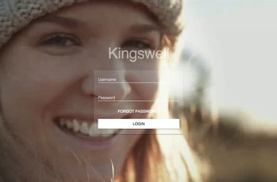
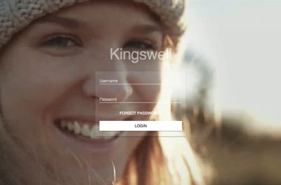
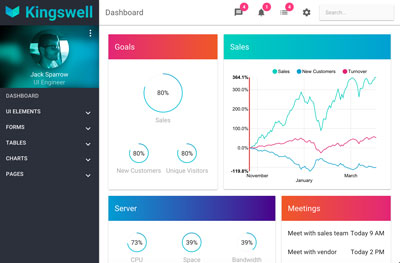
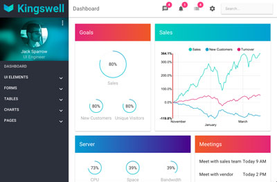

 

- Save thousands of dollars on a designer and a programmer setting up everything you get here
- Over 15 pages of elements with examples and easy copy and paste code
- Fully Responsive Layout, Dashboard, 2 Login Screens and 2 Register Screens
- Code structure, build system, already hooked up to a locally run Restify and Socket.IO server built inside the gulp script